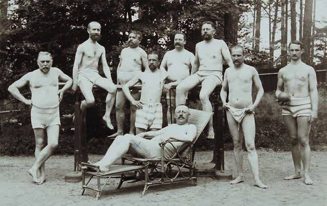
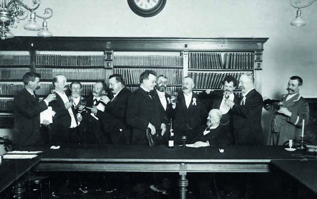
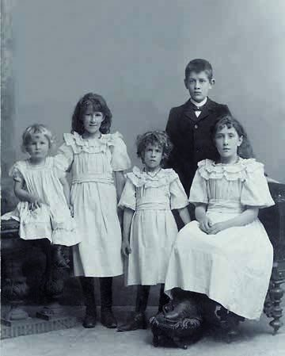
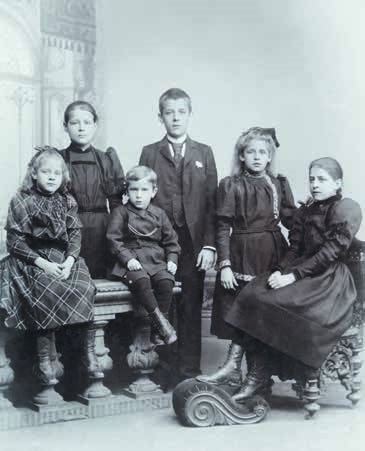
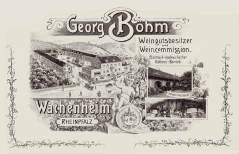
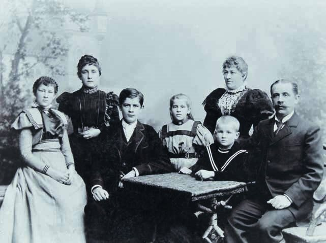
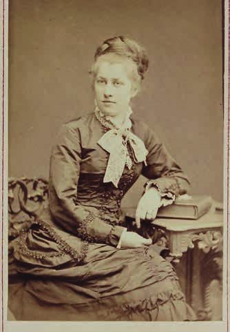
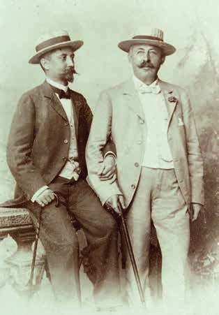

II. Die Geschichte von Friedrich Böhm · Kapitel 6
Vita Friedrich Böhm
ll. Die Geschichte von Friedrich Böhm und Emilie geb. Leonhard
Georg Böhm ɷ Maria (geb. Hoch)
Fritz Böhm † mit 18
Friedrich Böhm ɷ Emilie geb. Leonhard
Helene geb. Böhm ɷ Hans Marx Gertrud geb. Böhm ɷ Friedr. J. A. Bauer
Käthi geb. Böhm ɷ Wilhelm F. Stuber
Maria geb. Böhm ɷ Friedrich Sturm
Die folgenden Generationen sind im Zusammenhang mit der F1 – Generation genealogisch separat dargestellt und soweit vorhanden mit Fotos beschrieben.
Friedrich Böhm bei einer Weinprobe im bayerischen Landtag
Georg Böhm, Vater von Friedrich, der Firmengründer
Friedrich Böhm
(2.7.1848 – 21.3.1914) ist Sohn von Georg und Barbara Böhm geb. Wolf, dem Gründer des gleichlautenden Weinkomissions- und Handelsgeschäft Georg Böhm in Wachenheim. Er war verheiratet mit Emilie geb. Leonhard. Mit Aufmerksamkeit beobachtete er die finanzielle Unterlegenheit der kleinen Winzerbetriebe ohne eigene Ausbaukapazität gegenüber Kellereien und spekulierenden Komissionären. Ohne eine Zwischenfinanzierung waren die Trauben erzeugenden Bauern auf Gedeih und Verderb dem Herbstgeschehen ausgeliefert. Er gründete die erste Raiffeisen Genossenschaft der Pfalz, den “Wachenheimer Darlehnskassenverein eGmuH” und förderte die Gründung von 98 Raiffeisengenossenschaften, welche wiederum die Winzergenossenschaften finanzierten. Als “Verbandsanwalt” half er mit, die “Raiffeisener Organisation” landesweit aufzubauen.
Er war überzeugter Demokrat und vertrat die liberale Position der “fortschrittliche Volkspartei” der Pfalz. Als Abgeordneter und Fraktionssprecher im bayerischen Parlament (nach Herbert Stuber Caboga 1981, nicht von Raban Malzburg 1978 erwähnt) soll er sich durch diplomatisches Auftreten und besondere Begabung beim Schlichten von Konflikten ausgezeichnet haben. Er half gemeinsam mit Helfferich,
Recknagel und Sartorius die “deutsch-freisinnige Partei in der Pfalz” zu gründen. (spätere “demokratische Partei”). Nach 1909 unterstützte er die Fusionsbemühungen der drei linksliberalen Parteien. Er war nach dem Vollzug des Zusammenschlusses Mitglied des Landesausschusses und des geschäftsführenden Ausschuss. Er war 29 Jahre Stadtrat und Presbyter.
Aus 1878 resultiert der erhaltene Ehe- und Erbvertrag Böhm-Leonhard. Es wurde in diesem Vertrag Bestandsaufnahme des Vermögens der Eheleute gemacht, Friedrich besass Eigentum im Werte von 31.000.- (Gold)-Mark, die Braut brachte 17.994 Mark mit in die Ehe. Bräutigam, Braut und Brauteltern unterschrieben neben 6 Trauzeugen. Friedrich Böhm war ein Mann, der auch den politischen Konflikt nicht scheute. Als liberaler Demokrat war er erklärter Gegner der absolutistischen politischen Kraft, die von Bismark ausging, zu dieser Zeit war dies ein mutiges Unterfangen. Seine wirtschaftspolitische Bemühung, über die Raiffeisenkassen und Winzergenossenschaften die Existenz der Weinbauern abzusichern, war erfolgreich und wird bis heute anerkannt (siehe Photo Pokal, Seite 37). Friedrich hatte eine gute Hand mit Immobilien, man sprach in Wachenheim davon, er habe die “Steinkrankheit”. Neben dem Kontor der Weinkellerei des Vaters, besass er das Schwab’sche Anwesen in der Wachenheimerstrasse in Dürkheim, in welches er nach dem Verkauf des “Schlosses” verzog; er baute eine neue Kellerei in der Bahnhofstrasse, die Paul Leonhard führte (späteres Wiedemann'sches Anwesen), er besass das Fries’sche Haus in Wachenheim. Als die Sehsucht ihn nach Wachenheim zurückbrachte, erwarb er das ehemalige Wolf’sche Haus. Es war ein Anwesen mit 3 ha Parkgelände, Dachterrassen mit Säulenbalustraden und einem Wintergarten mit Palmen. Aber auch hier
Friedrich Böhm bei nicht beschriebenem Anlass
Friedrich Böhm im Wandel der Zeit
Seine Kinder: Georg, Käthy, Maria, Fritz, Georg Gerdrude, Helene
fand er bald Widersacher, wie die Schmähschrift von Pfarrer Kessler aus Euβerthal: “für Recht und Ordnung” (J. G. Biller Ludwigshafen 1897) sehr deutlich zeigt, und Friedrich der Eigeninteressen rügt, nachdem er den Genossenschaftssitz in ein ihm gehörende Anwesen verlegte.
Es besteht ein Testament von 1911 auf gegenseitige Erbschaft; Friedrich Böhm starb 1914 auf dem Küchentisch, als wegen einer Fehldianose eine Notoperation zur Niereninsuffizienz notwendig wurde. Friedrich hinterlieβ ein für die damalige Zeit bedeutendes Barvermögen, wovon 50.000.- Goldmark für jedes der Kinder verteilt wurde. Interessant ist, daβ 1927/8 die drei Geschwister Georg, Helene und Emilie gemeinsam die Grundstücke verkauften; in der Liste der
Käufer findet sich Reichsrath von Buhl, Rein-
hardt und viele bekannte Namen, nicht aber Carl
Jos. Hoch. Es wurde berichtet, daβ das Geld der
Geschwister dann im Bankhaus Stuber ange-
legt wurde und in der 1929 Inflation abgewer-
tet wurde. Georg Böhm soll daraufhin den Kon-
takt zu den Stubers abgebrochen haben. Er
wurde erst in der folgenden Generation wieder
aufgenommen.
Unter dem Titel, die “Weine der Rhein-
pfalz“, verlegte Friedrich Böhm 1900 eine der
besten Dokumentationen, die mir aus dieser Zeit
bekannt ist, die von Emil Thieme Kaiserslautern herausgeben wurde.
Kinder von Ludwig: Heinz, Karla, Helga, Otto, Emmy
Ludwig Böhm, Bruder von Friedrich, verzog später nach München
Otto Böhm
Mit Friedrichs Tod kam das unternehmerische Ende der Georg Böhm Weinkellerei und Kommision. Als Georg bei Hochs einheiratete, musste er eine Verzichtserklärung unterschreiben bezüglich des konkurrierenden väterlichen Betriebes. Drei Schwestern hatten Unternehmer anderer Branchen geehelicht, eine war krank und der Thronfolger Fritz fiel im Kriege. Das Unternehmen wurde von Geschäftsführern weiter verwaltet und überstand den Krieg und die nachfolgende Inflation. Aber die Gesellschafter waren sich nicht einig. Tochter Gertrud verheiratete Bauer war die erste, die erkannte, dass es nicht der Käfig ist, der zwischert, sondern der Vogel, der darin sitzt. Nach dem Tode der Mutter drängte sie als erste auf Auszahlung des Erbes.
Friedrich mit Bruder Ludwig Böhm
Ludwig mit Ehefrau Maria, geb. Heinrich mit den Kindern: Heinz, Helga, Otto, Emmy und Karla
Karl Wilhelm, Helena, und Maria, Geschwister von Friedrich Böhm
Deckblatt des Buches über die Pfälzer Weine 1901 der Weinkellerei Georg Böhm
Emmy Tochter von Ludwig Böhm







